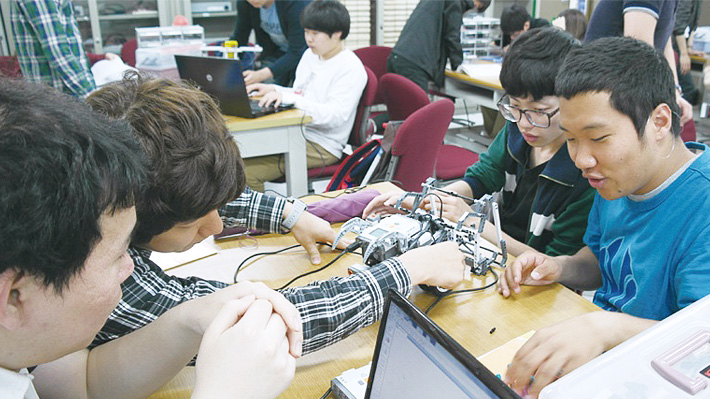

학과소개
전문 프로그래머를 양성하는 동시에 새로운 이론과 교육 방법을 창출
새로운 컴퓨터공학의 활동을 리드하는 새로운 꿈과 가능성을 가진 프로그래머를 양성합니다.

어떤 학과인가요?
컴퓨터공학은 1988년 자연과학대학 컴퓨터과학과에서 출발하여 1999년 교육인적자원부의 BK21사업참여를 위해 공과대학으로 재편된 후, 정보사회에 필요한 컴퓨터공학의 기초 및 첨단지식을 습득하여, 고급 정보기술인 및 관리자로서의 능력을 함양하고, 2004년 모든 교육과정에 대한 공학교육인증을 득함으로써 세계적으로 인정받는 학생만을 배출해 왔습니다.
2007년에는 원주대와의 통합으로 컴퓨터공학은 다시 원주 캠퍼스의 문화산업대로 재편됨으로써 또 한 번의 학과발전 계기를 맞이하게 되었습니다.
어떤걸 배우나요?
컴퓨터공학전공 교육과정 내에는 교사 지망생을 위한 교직과정이 운영되고 있고, 대학원 과정으로 일반대학원과 교육대학원이 설치되어 있으며, 곧 산업대학원을 설치할 예정입니다.
졸업 후에는 석사 및 박사 과정ㆍ정부기관(전산직 공무원)ㆍ중등학교 전산교사(교직과정 이수자)ㆍ금융업 및 기업체의 전산실ㆍ유학ㆍ연구소ㆍ벤처창업 등 다양한 분야에 걸쳐 사회에 진출할 수 있다.
재학 중에는 산업체에서 각광받고 있는 정보처리기사ㆍ전자계산조직응용기사ㆍ네트워크관리사ㆍ전자상거래관리사ㆍ웹마스터 등의 국가자격증과 OCP(오라클)ㆍMCSD(마이크로소프트)ㆍCCNA(시스코)ㆍSCJPㆍSCNA(선마이크로시스템) 등 세계적으로 유수한 기업이 주관하는 국제공인자격증을 취득하여 취업에 대한 확고한 경쟁력을 다질 수 있습니다.